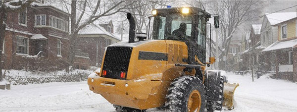

Call us at:
847-870-7283
or visit our Contact page to get started!
847-870-7283
or visit our Contact page to get started!
A Prefered Snow Services, Inc.
2403 Martin Lane
Rolling Meadows, IL 60008
2403 Martin Lane
Rolling Meadows, IL 60008
A LITTLE BIT ABOUT US
We are a member of the Arlington Heights, Mount Prospect and Rolling Meadows Chambers of Commerce from whom we consistently recieve referrals.We are fully licensed, bonded, and insured.
We are well versed in the insurance company standards.
Enjoy the benefits of having your snow removal done by a company that is experienced, knowledgeable, and provides the highest level of customer service.
Maintaining long-term business relationships is what we do best.

 Our commitment is to do a job well done
Our commitment is to do a job well done
Member of the Better Business Bureau since 2001 and have recieved a letter grade of A+ for our outstanding business practices.
A Preferred Snow Services, Inc. provides commercial/residential/industial snow plowing, snow haul/dump, ice control and sidewalk shoveling to clients throughout the Chicagoland area. We pride ourselves on superier customer retention with 24-hour on-call service from the commencement of contract to termination.
A Preferred Snow Services, Inc has been providing the Chicago Metropolitan Area with professional snow and ice control services for over 20 years. Today, Preferred Snow Services, Inc. sets the standard for safety, timeliness, and efficiency in the services it provides to both its commercial and residential clients.
Services include:
- Snow Plowing
- De-icing
- Salting
- Hauling and Dump Snow off-site
Our commitment is to do a job well doneMember of the Better Business Bureau since 2001 and have recieved a letter grade of A+ for our outstanding business practices.